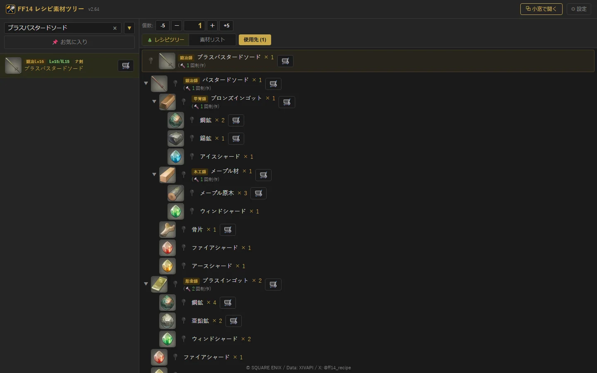
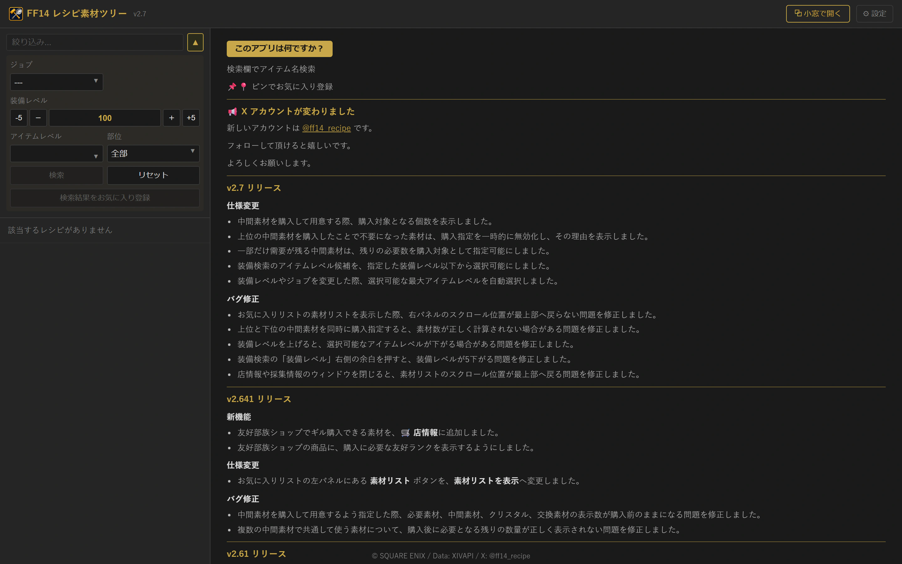
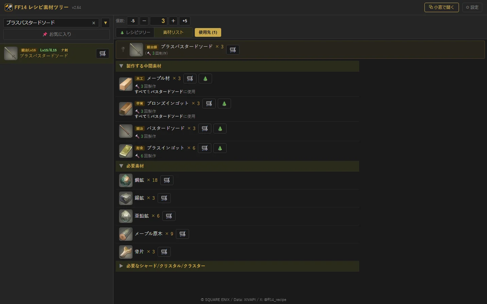
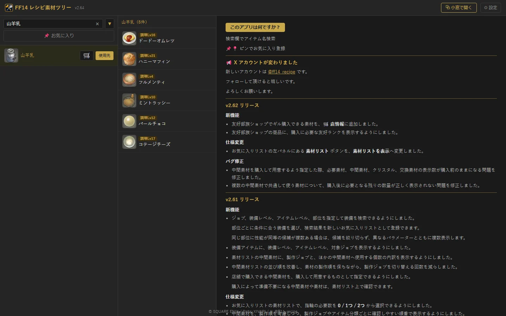
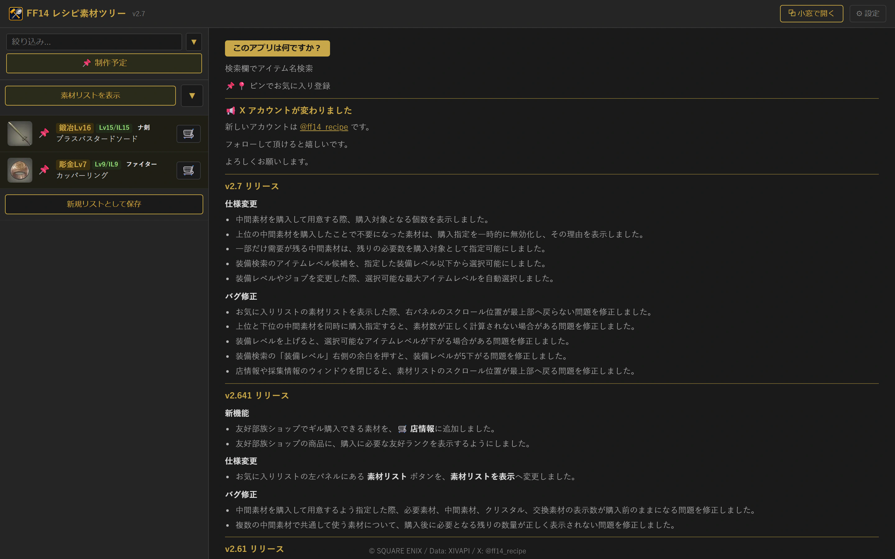
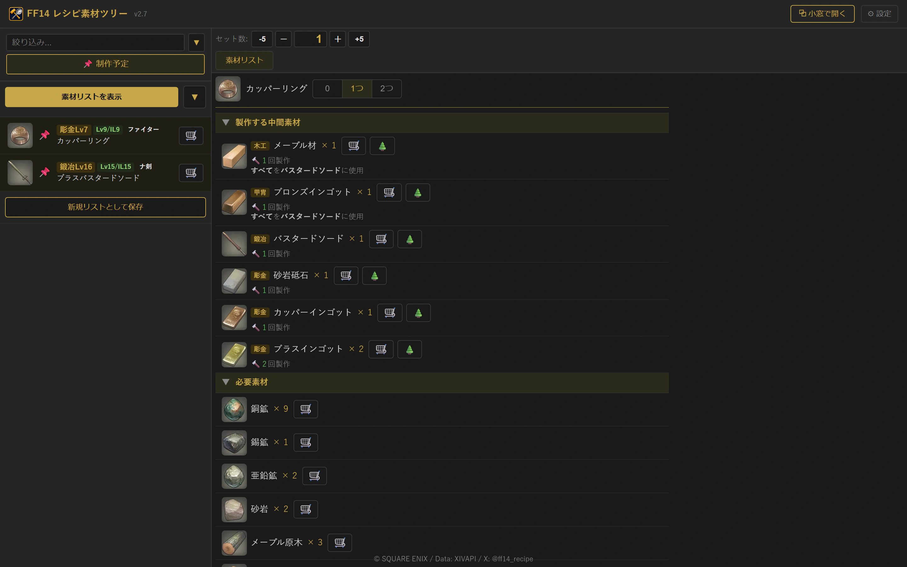
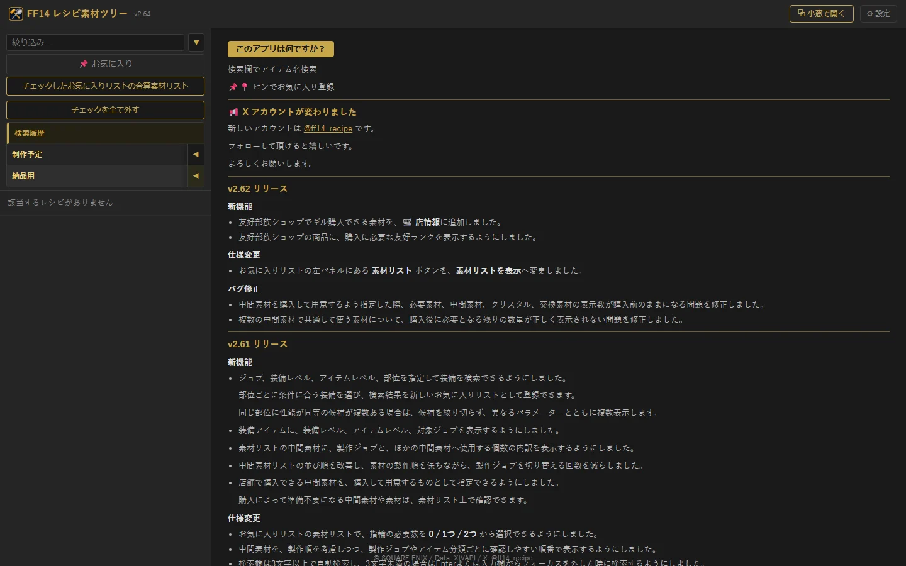

まずはここから
このアプリでできること
レシピを展開中間素材を含む制作工程をツリーで確認
素材を合算必要な素材と個数を一覧で確認
使用先を逆引きその素材から作れるアイテムを検索
予定をまとめるお気に入りリストを保存・共有
作りたいアイテムから必要素材を調べ、複数の制作予定もひとまとめにできる非公式Webアプリです。
まずはここから
STEP 1

名前が分からない装備は、検索欄右の「▼」からジョブ・レベル・部位で絞り込めます。
検索欄右の「▼」を開き、ジョブ・装備レベル・アイテムレベル・部位を指定します。「検索結果をお気に入り登録」で候補を一括保存できます。

STEP 2

STEP 3
素材を選んで「使用先」を押すと、その素材を使うレシピを一覧できます。余った素材の使い道を探すときに便利です。

検索したアイテムと、開いた素材・レシピは「検索履歴」に最大100件保存されます。検索欄の「×」で現在の絞り込みを消せます。
STEP 4



このガイドをスマートフォン幅で開くと、掲載画像もすべて実際のスマホ用画面へ切り替わります。アプリでは「戻る」で検索結果・使用先・レシピを行き来します。端末をPC幅との境界をまたいで回転・変更した場合は、安全のため初期画面へ戻ります。